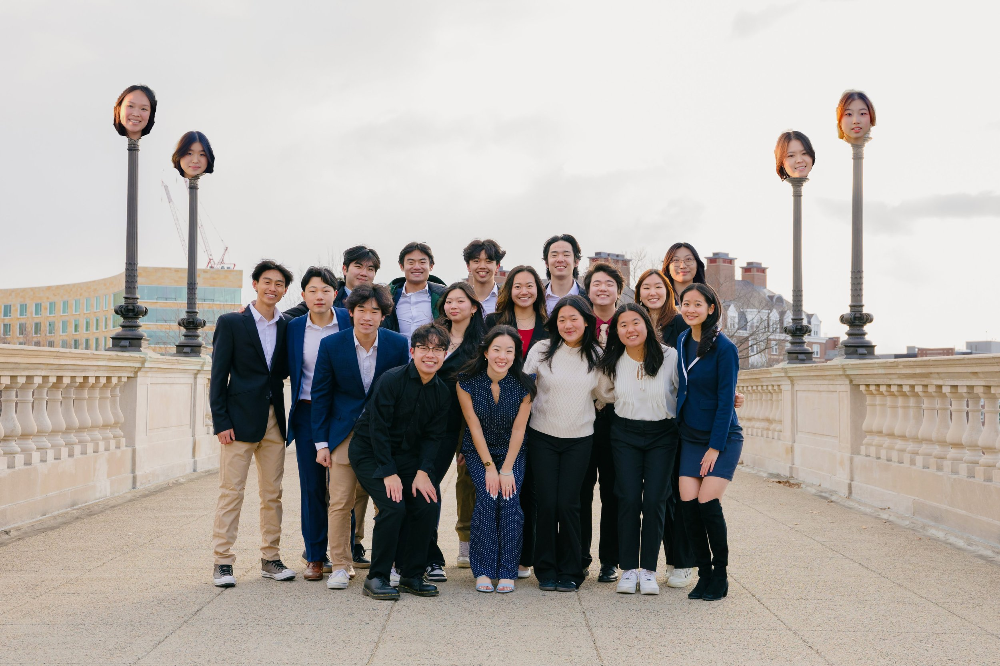

你好!
We are the Harvard-Radcliffe Chinese Students Association (CSA), one of the largest and most active student organizations at Harvard College, comprising over one thousand general members and twenty Executive Board members. We serve as a home to Harvard’s Chinese and Chinese American community, and a platform for social, cultural, and educational/political interaction among students of all backgrounds.
To our general members, welcome home! You can find information about who we are and how to get involved on this website. To sign up for the mailing list, check out the “Sign Up” tab in the navigation bar.
To our alumni, welcome back! Having been around for over fifty years, our alumni network is among the largest of Harvard’s student organizations. Check out the “Alumni” tab for more ways to get involved, to connect with fellow alumni, and to support today CSA today.
To our visitors and supporters, we welcome you to reach out with any questions, concerns, or requests at the “Contact Us” page. As one of the largest cultural communities on campus, we’re more than happy to partner with outside organizations to host events, promote outreach, and establish relationships with Harvard’s Chinese and Chinese American students.
The Chinese and Chinese American family at Harvard is strong, born of decades of tradition, solidarity, and trust. It is our pleasure to play a part in maintaining that community, and we look forward to connecting with all of you in the weeks and months to come.
With Love,
CSA Board

Meet our fall 2024 board!